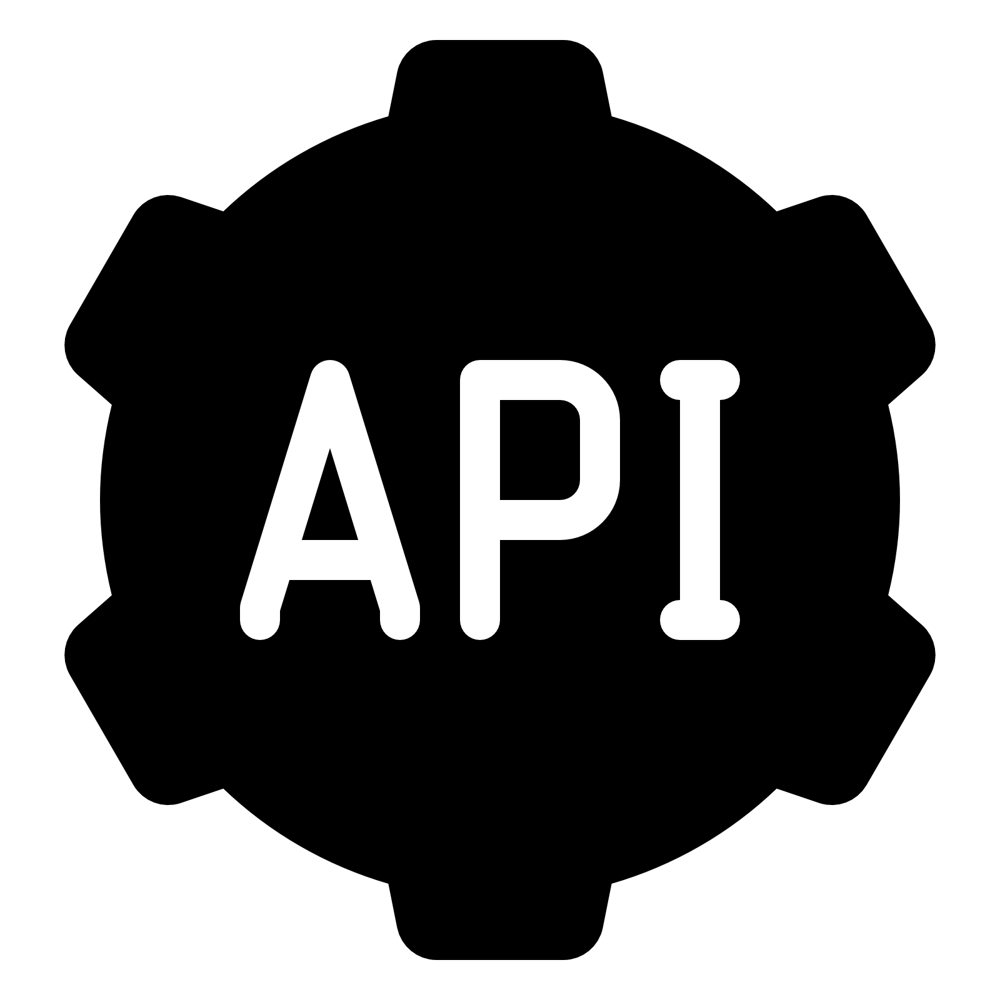
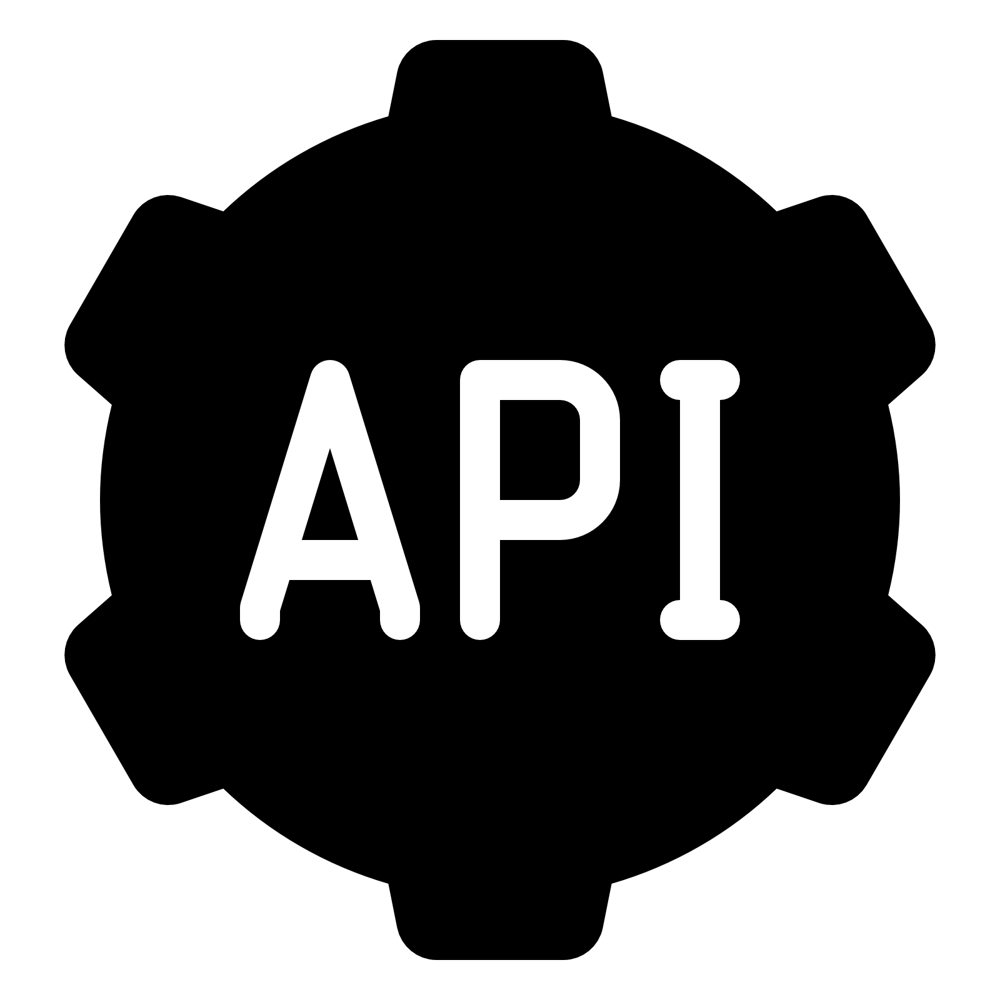

My Story

As a Test Engineer, I am responsible for ensuring that software applications meet high-quality standards. I design and execute test plans, including functional, regression, and User Acceptance Testing (UAT). I have experience using various automation tools, including UFT One, Selenium, and Appium. With these tools, I am able to accelerate the testing process and track identified issues. To support these tools, I use Visual Basic for UFT One and Java for Selenium and Appium.I create automation test scripts at a 1:1 ratio with manual test scripts to help track bugs and actively collaborate with the development team to resolve issues and fix identified bugs. Through a risk-based approach and automated testing, I successfully reduced the number of bugs discovered by end-users by 20% and improved the testing team's efficiency by 30%. Overall, my experience as a Test Engineer has strengthened my ability to identify issues, collaborate within a team, and apply effective testing methodologies to achieve better results.
Languages
My experience languages for programming and as QA automation.
Tools


My experience tools for version control, code editing, and setup testing.
Automation Platform
 


My experience platform for automation testing.